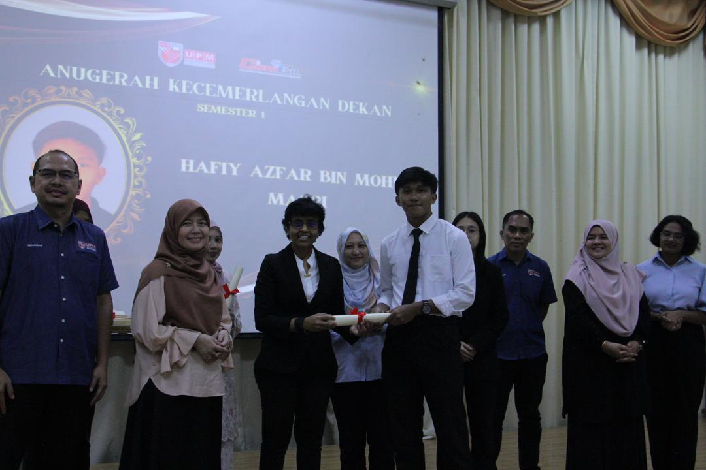

Hi! I'm HAFIY AZFAR BIN MOHD MASRI.I'm a passionate software engineering student who loves
building things that make life easier and more connected. I'm curious by nature and constantly eager to learn, improve, and collaborate.
Curiosity is at the heart of everything I do. I'm always eager to explore new technologies, tools, and methodologies that can enhance my skills and broaden my perspective. This mindset has led me
to experiment with various programming languages, frameworks, and development environments to stay adaptable and relevant in a fast-changing industry.
Beyond coding, I deeply value collaboration and shared learning. Working with others allows me to exchange ideas, grow from feedback, and contribute to team success. I'm excited about the journey ahead and constantly look for opportunities to learn, improve, and make a positive impact through technology.

A highly motivated and detail-oriented Software Engineering student at University Putra Malaysia (UPM)
 with a strong academic background,
earning a CGPA of 3.88 and a place on the Dean’s List. Proficient
in programming languages such as Python
and Java, as well as development
and management. Experienced in customer service and retail, demonstrating excellent communication, teamwork, and
problem-solving skills in fast-paced environments.
with a strong academic background,
earning a CGPA of 3.88 and a place on the Dean’s List. Proficient
in programming languages such as Python
and Java, as well as development
and management. Experienced in customer service and retail, demonstrating excellent communication, teamwork, and
problem-solving skills in fast-paced environments.